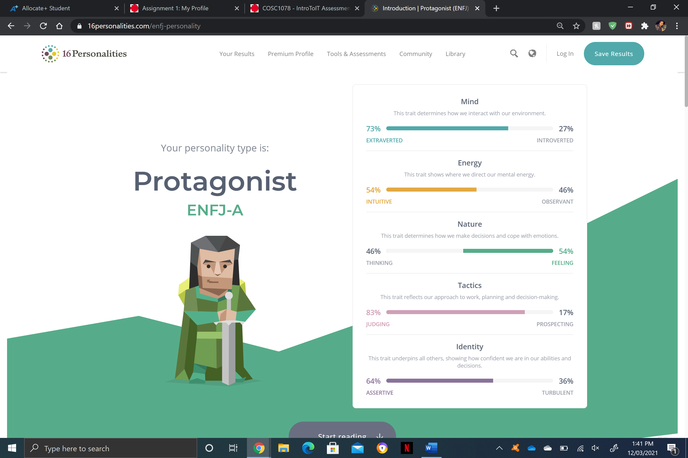
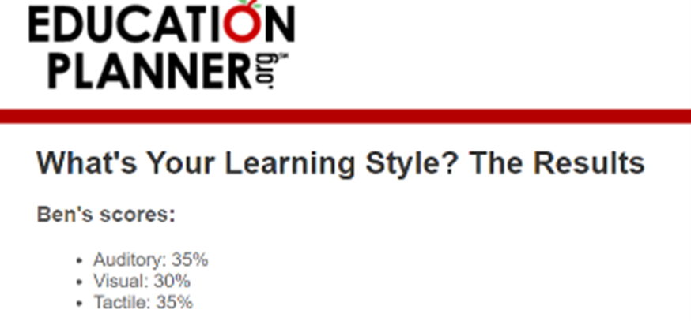
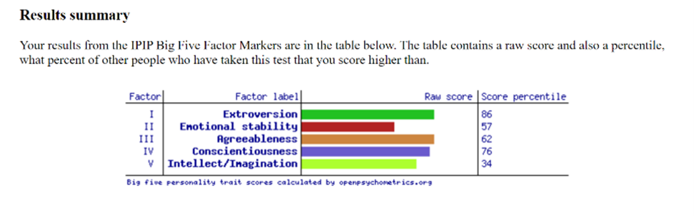

GitHub Repository URL - https://github.com/BenMerkli/myprofile
GitHub Pages URL - https://benmerkli.github.io/myprofile/
Name: Benjamin James Merkli
Student Number: s3896757
Personal Email: benmerkli@icloud.com
Student Email: s3896757@student.rmit.edu.au
Background Information:
I was born here in Melbourne, Australia and grew up in the south-east suburb, Mulgrave, which is located between Springvale and Glen Waverley. I am half Lebanese and half Hungarian; however, I can only speak English fluently based on my upbringing.
I attended Glen Waverley South Primary School (2008-2014) and then transitioned to Brentwood Secondary College to complete high school and obtain VCE certificate (2015-2020). I have played Australian Football my entire life, as it is something I really enjoy and quite decent at.
One fun fact about me is that I have been invited to a player development course/session with the Oakleigh Chargers and Hawthorn Football club to improve on my skills and football knowledge, therefore this can become a gateway to the AFL.
What is your interest in IT? When did your interest in IT start?
My interest in IT ranges to a variety of aspects within the term “IT”. I am very fond of cybersecurity and its ability to protect systems from harmful risks and gain access into areas an average individual would not be able to do.
Moreover, I am very interested in the software and hardware that is in a computer and how certain bits and pieces of wires and plastic can create one of the worlds most innovative creations.
My interest in IT sparked when I was about 7 or 8 years old when I somehow managed to gain access into my neighbour’s password protected home WIFI, so I could watch YouTube videos and download games from the App Store.
The satisfaction when solving complex issues via a computer or smartphone gives me a buzz of joy, and therefore that is why I would like to pursue a career in IT.
Was there a particular event or person that sparked your interest? Outline your IT experience.
Not only gaining access into my neighbours’ home WIFI sparked my interest in IT (my iPod was taken off me for this incident), playing video games as a child allowed me to become more and more passionate in the field of Information Technology, allowing me to grow my tech skills, enabling me to solve technical issues family and friends would face on their computers and smartphones.
When I was in Year 6 at Glen Waverley South Primary School, I was elected as an ICT captain for the school, which heavily involved being surrounded by computers, interactive whiteboards, and other IT related items.
My role was to solve computer related issues students and teachers would endure and solve these issues with the school’s IT department. The role also carried across onto setting up the computers, microphones, and presentation requirements for the school’s weekly assemblies.
Why did you choose to come to RMIT?
I chose to come to RMIT as the course structure of BP162 (Bachelor of Information Technology) sounded interesting, straightforward and will allow me to obtain the necessary skills for future jobs in the IT industry.
I have many friends and family members who have also attended RMIT, and with the positive feedback I have heard about the university, enticed me to enrol and join the RMIT team. Furthermore, the facilities RMIT Melbourne City Campus provides for their staff and students are ‘top-notch’ and I personally consider it to be world class, so it would be foolish of me not to join RMIT.
What do you expect to learn during your studies?
I expect to learn a variety of IT related knowledge and skills during my studies at RMIT. I would love to learn the fundamentals of cybersecurity and coding, as well as what IT companies specifically look for in a potential employee.
As I do have some IT knowledge and skill, I am eager to learn and grow on these skills in which I can adapt into a future career and my everyday life. IT is a growing industry and will be a powerhouse of the future, that is one of the main reasons why I chose this course as I want to be ‘industry ready’ and skilful enough for when IT is in extreme high demand.
A description (in your own words) of the position, and particularly what makes this position appealing to you.
Mercedes Benz Canada are currently looking for a candidate to fulfill the Senior Penetration Testing role they have up for offer. As a Senior Penetration Tester, the role “is responsible for performing penetration tests in unique, complex and challenging environment.” The lucky candidate will join their Global Cyber Security Team and will help find vulnerabilities within the Mercedes Benz IT systems and help resolve these issues.
As I am very fond in automobiles, especially luxury cars, this role at Mercedes Benz Canada appeals to me the most as it covers a vast range of responsibilities and areas, I am interested in. This role also appeals to me as it contains excellent employee ‘perks’ and will also give me the chance for further ‘career growth opportunities.’
A description (in your own words of the skills, qualifications and experience required for the position.
The qualifications and skills required for this position includes a “University degree in Information Technology”, certifications in either OSCP, OSCE or CISSP, practical knowledge of the OWASP testing guide, extensive experience with both Python and security testing tools, and to be English fluent. German speaking would be an additional optional skill to the opportunity.
A description (in your own words of the skills, qualifications and experience you currently have.
I currently do not have the skills, qualifications or required experience that is needed for this position yet. However, I have very little experience with Python coding and some penetration testing practice with the website ‘HackTheBox’. I know a range greetings and phrases in German, as it was a selected language at my High School, therefore it somewhat meets the optional additional skill of German speaking/reading. The role of a senior penetration tester is heavily influenced within a ‘team environment’, therefore my 3+ years of retail/hospitality experience and participation in team sports has given me the leadership and communication qualities that are needed for this position.
A plan describing how you will obtain the skills, qualifications and experience required for the position, building on those you have now.
As I am currently enrolled in RMIT’s ‘Bachelor of Information Technology’ course, the classes running throughout the 3 years of this course will allow me to gain the certification and skills in Python coding, penetration testing techniques and the required university degree for the role. I plan on building my skills and knowledge with Python using ‘Trinket’, a website that teaches Python coding. I may also continue my knowledge with the German language, which I can then add to my resume and help me stand out from other potential participants. Lastly, at the end of my course with RMIT, I will hopefully have the required Bachelor of Information Technology degree Mercedes Benz are currently searching for.
Myers-Brigg's Test
Online Learning Style Test
What is your learning style? Quiz
Big Five Personality Test
What do the results of these tests mean for you?
The results from these tests indicate that I am significantly more extroverted than introverted, which further proves that I have the personality traits of a natural-born leader, full of passion and charisma. From these results provided, when the time comes to search for a position with an organisation in the IT industry, I will be on the lookout for a position where I can develop my IT skills and knowledge, as well as seeking a role that can further push my career into a higher management/senior role. With the chance and ability of obtaining a management/senior role in an IT field, this will allow me to truly utilise my leadership skills and continue the business’ success.
How do you think these results may influence your behaviour in a team?
The results from these tests may influence my behaviour in a team by making me more open-minded to other people’s thoughts and feelings and allowing me to take a leadership role within the team to accomplish the team’s goals. In the online learning style test (educationplanner.org), the results from this test identifies that I am more of an auditory learner, therefore in a team situation, I will closely listen to each team members ideas or concerns and help them along the way for success to be achieved.
How should you take this into account when forming a team?
From the tests conducted, the results prove that I am an auditory learner and that I go by feeling rather than thinking in decision making. Therefore, I will take these results into account when forming a team by communicating with a large group of people and analyse how they communicate in return and identify what their personality traits are. From this, I will go by my ‘gut-feeling’ and select a handful of people that I believe will work successfully together and lay out expectations so that everyone has the same mindset when pursing team success.
Overview
My project idea consists of a new, innovative way people in Australia can communicate sport related topics/discussions, with the use of other tools to help them gamble responsibly and have a higher chance of obtaining profit. I would like to create “SportsBuzz”, a website/app that is easily accessible to the public which will allow sport-minded individuals to open to an app that will show live odds from competing sport betting platforms(e.g., SportsBet, Bet365, etc) and compare the prices, giving users a quick insight on what every platform has to offer and what the recommended bet they should place on any match. Furthermore, I would like this project to contain a live thread discussion, which enables all users to give their opinion on what the odds and expectations are for any game from any sport.
Motivation
As sports betting has grown to become a national issue over the past decade, more and more Australians are continuing to lose their hard-earned cash over these addictive gambling platforms. Close friends and family of mine love to gamble, yet they lose quite a fair amount of money each time a bet is placed. Additionally, the Federal Government have not provided any regulations on these platforms, therefore making it hard for punters to quit or even limit their expenditure. From this, I have noticed that there are not many accessible tools online to help individuals make an informed decision when placing a bet. Although there are reddit pages and websites highlighting plausible bet outcomes, these online tools can become quite confusing and overwhelming for the user, thereby an irrational bet is placed, and money is lost. As I do not fully support the act of ‘gambling’, I have noticed there aren’t many services out there that will help people place a bet smartly and safely, thus the introduction of “SportsBuzz” can assist with this issue.
Description
- A mix of Facebook and Reddit together, solely based on Sports Betting.
- Live thread/discussion allowing users to express their opinions on the odds and outcomes for upcoming games
- Live odds of competing sport betting platforms. Indicating which platform offers the best odds if user is intending to place a bet. Saves the hassle of going through each sport betting platform to see what the offers are on sport games/matches.
- Hand selected users will be made a “moderator” or “admin”. This will give them the role of banning and deleting hate speech and nasty comments, banning users, updating live odds to keep the platform efficient.
- The app will give a computer generated “safe bet” feature – this allows users to get an understanding on how much they should spend on a certain game or multi. This psychologically helps the user watch their spending whilst gambling.
- Users can become friends with one another, post on discussion boards, comment on posts and privately message another user.
- The UI will be simple, modern and easy to navigate, as I want the application to be a tool for users to quickly use before placing a informed bet.
- The platform will contain an in-app game called “SportsBuzz Tips”. This is where all registered users on the app can tip against one another and hold their own tipping competitions on selected sports.
- Users must be 18 years of age or older to sign up and access all of the platform’s features. This can be done by submitting a form of ID during the registration process
- Users under the age of 18 cannot access all content in the SportsBuzz app, however they can play the in-app game of “SportsBuzz” tips with other users.
- The app will only be available for Australia. Therefore, making the users gain a sense of security and reliability when using the app and taking in the information provided.
- The app will be free for all users with no hidden fees. Only listed within the Australian market (Australian App Store)
Tools and Technologies
Software:
- Google trends (This is the ‘market-research’ phase of the development. This tool allows the developer to analyse the demands and constraints surrounding the app genre/topic)
- Online mock- up websites (Any mock-up/design website will be applicable, gives the developer a deeper insight on what the interface will look like for the user).
- Origami Studio (a tool for designing modern user interfaces)
- HTML/CSS required (needed for the websites development)
- XCode and Swift (required to build the actual app) (IOS based)
Hardware:
- Hand drawn mock-ups
- Printers
- Speakers
- USB/HDD
Other Equipment:
- Stationary (Pens, Pencils, etc)
Skills Required
- Basic HTML/CSS coding skills will be required for the website’s development
- Open-minded and creativity is a must!
- Quick problem-solving skills
- Basic computer knowledge (files, chrome, word, etc)
- Some experience with XCode and Swift or a similar app building program
- As the app is sports based, a strong background knowledge in sports would be an additional bonus.
Finding the skills with the software and hardware would not be too hard as basic HTML/CSS knowledge is easy to pick up on and will be required for the project. However, some time and effort will need to be put into understanding the fundamentals of XCode or Swift, as they are necessary for the app’s development.
Outcome
If the project is successful, the outcome will be a fully functional app and website that will be free to download for all Australians. The program will allow users to view live odds of competing sport betting platforms, access to a large range of discussions/forums and other tools to help users make a informed decision before placing a bet.
The original problem of Australian punters losing their money will decrease as they have the access to live discussions and opinions of upcoming sporting events, gaining a deeper understanding of what the outcome may be, thereby decreasing their chances of losing.
Without this new development, Australian punters are unaware of what their winning chances are when placing a bet. Therefore, providing a free service will positively impact all punters by giving all users a deep insight into what the odds may be and gaining information from other punters who may be more knowledgeable in certain sports. It is a collaborative tool. The more people involved, the better the outcome!